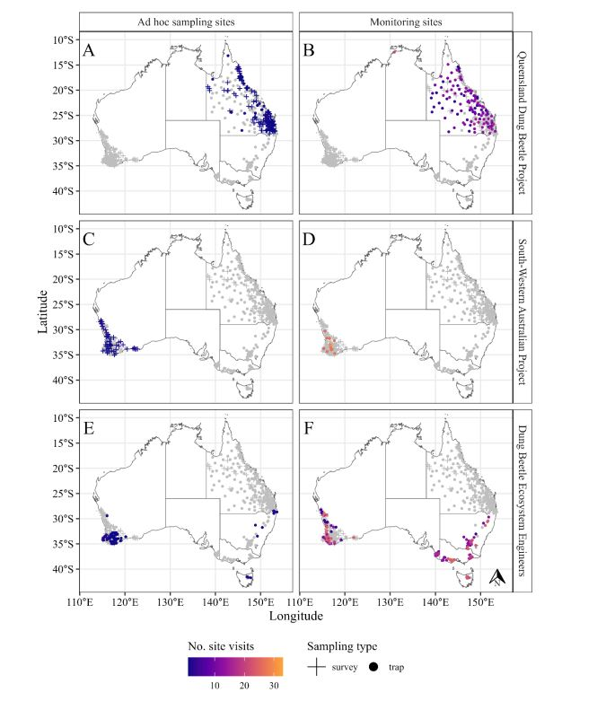
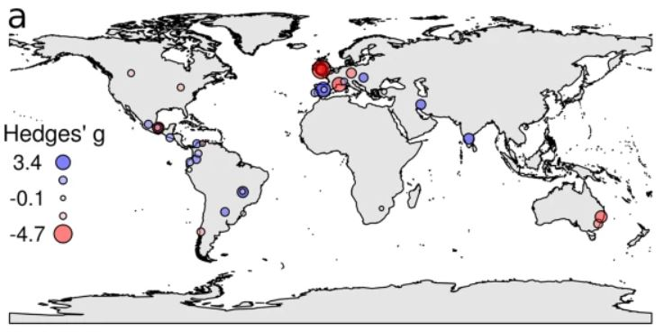
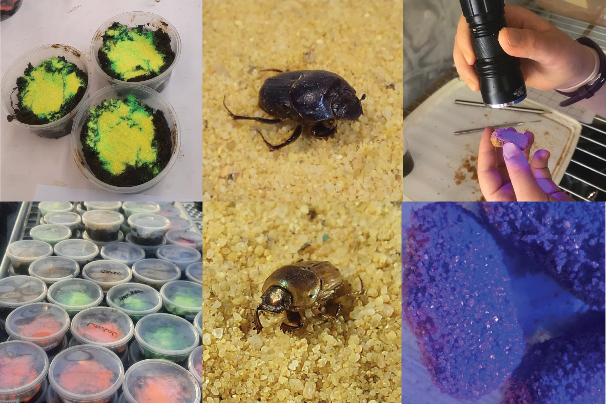

Publications
Check out some of the scientific publications in which I'm an author
Deliberately introduced dung beetles in Australia: 12 years of occurrence and abundance records from 2001 to 2022 
Authors: Berson, J. D., Edwards, P. B., Ridsdill-Smith, T. J., Taylor, C. K. et al.
Year: 2024
Journal: Ecology
DOI: 10.1002/ecy.4328
Abstract:
Since 1968, the Australian Dung Beetle Project has carried out field releases of 43 deliberately introduced dung beetle species for the biological control of livestock dung and dung-breeding pests. Of these, 23 species are known to have become established. For most of these species, sufficient time has elapsed for population expansion to fill the extent of their potential geographic range through both natural and human-assisted dispersal. Consequently, over the last 20 years, extensive efforts have been made to quantify the current distribution of these introduced dung beetles, as well as the seasonal and spatial variation in their activity levels. Much of these data and their associated metadata have remained unpublished, and they have not previously been synthesized into a cohesive dataset. Here, we collate and report data from the three largest dung beetle monitoring projects from 2001 to 2022. Together, these projects encompass data collected from across Australia, and include records for all 23 species of established dung beetles introduced for biocontrol purposes. In total, these data include 22,718 presence records and 213,538 absence records collected during 10,272 sampling events at 546 locations. Most presence records (97%) include abundance data. In total, 1,752,807 dung beetles were identified as part of these data. The distributional occurrence and abundance data can be used to explore questions such as factors influencing dung beetle species distributions, dung beetle biocontrol, and insect-mediated ecosystem services. These data are provided under a CC-BY-NC 4.0 license and users are encouraged to cite this data paper when using the data.
Dung removal increases under higher dung beetle functional diversity regardless of grazing intensification
Authors: Noriega, J.A., Hortal, J., deCastro-Arrazola, I. et al.
Year: 2023
Journal: Nature Communications
DOI: 10.1038/s41467-023-43760-8
Abstract:
Dung removal by macrofauna such as dung beetles is an important process for nutrient cycling in pasturelands. Intensification of farming practices generally reduces species and functional diversity of terrestrial invertebrates, which may negatively affect ecosystem services. Here, we investigate the effects of cattle-grazing intensification on dung removal by dung beetles in field experiments replicated in 38 pastures around the world. Within each study site, we measured dung removal in pastures managed with low- and high-intensity regimes to assess between-regime differences in dung beetle diversity and dung removal, whilst also considering climate and regional variations. The impacts of intensification were heterogeneous, either diminishing or increasing dung beetle species richness, functional diversity, and dung removal rates. The effects of beetle diversity on dung removal were more variable across sites than within sites. Dung removal increased with species richness across sites, while functional diversity consistently enhanced dung removal within sites, independently of cattle grazing intensity or climate. Our findings indicate that, despite intensified cattle stocking rates, ecosystem services related to decomposition and nutrient cycling can be maintained when a functionally diverse dung beetle community inhabits the human-modified landscape.
A simple technique to assess resource use in dung beetle breeding studies 
Authors: Lewis, M. J., Berson, J. D., Didham, R. K. and Evans, T. A.
Year: 2023
Journal: Ecological Entomology
DOI: 10.1111/een.13277
Abstract:
Current methods for identifying resource preferences in dung beetles are based on above-ground trials. Although useful, these methods do not directly investigate resource provisioning of offspring below ground, missing an important part of dung beetle ecology. We tested the potential for UV-fluorescent and non-fluorescent coloured glitters to be used as markers for tracing the origin of dung incorporated into brood balls (dung shaped by parental beetles enclosing an egg), and so aid in a more complete understanding of resource use in dung beetles. We tested the effect of glitter addition on brood ball production in two species of tunnelling dung beetles, Onthophagus taurus and Euoniticellus fulvus.There was no effect of glitter addition on brood ball production during no-choice tests for each species: both species made a similar number of brood balls, regardless of glitter presence or glitter colour. In a separate choice trial, O. taurus showed no preference for dung when presented with four dung pats containing four unique glitter colours. Here we show that glitter can be used as an effective marker of individual brood ball origin in tunnelling dung beetles. This method provides a useful tool for tracking below ground resource use and larval provisioning experiments in dung beetles.